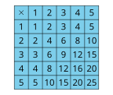

Los estudiantes pueden haber trabajado con la tabla de multiplicar en una lección anterior. En esta lección, los estudiantes observan patrones y estructuras en la tabla que resaltan propiedades útiles para multiplicar números. El foco principal está en la propiedad conmutativa, que indica que si se multiplican dos números en cualquier orden se obtiene el mismo resultado. Los estudiantes utilizan esta observación para encontrar productos desconocidos.
Preguntas de reflexión.
¿Qué le sorprendió sobre cómo pensaron los estudiantes en la primera actividad?
SubsubsecciónCalentamiento (10 mins)
Tiempo recomendado.
10 minutos
Narrativa.
El propósito de esta actividad es generar la idea de que el producto de dos factores en la tabla de multiplicar se encuentra en la casilla donde se cruzan la fila y la columna de cada factor. Aunque los estudiantes pueden observar y preguntarse muchas cosas sobre estos productos, se debe hacer énfasis en los patrones de la tabla de multiplicar y en cómo está estructurada.
Lanzamiento.
Grupos de 2
Mostrar la imagen.
“¿Qué observan? ¿Qué se preguntan?”
1 minuto: tiempo para pensar en silencio
Desarrollo de la actividad.
“Discutan con su compañero lo que pensaron”
1 minuto: discusión en pareja
Compartan y registren las respuestas.
Calentamiento36.Observa y pregúntate: Tabla de multiplicar.
¿Qué observas? ¿Qué te preguntas?

Solución.
Los estudiantes pueden observar:
Los números en la fila superior y en la columna de la izquierda son factores.
El producto está en la fila de un factor y en la columna del otro.
La fila que comienza con 5 cuenta de 5 en 5 a medida que uno se mueve hacia la derecha: 5, 10, 15, etc.
La columna que comienza con 3 cuenta de 3 en 3 a medida que uno se mueve hacia abajo: 3, 6, 9, etc.
Hay muchos patrones en la tabla.
La tabla es similar a algunas tablas que vimos antes, pero esas tablas tenían que ver con la suma.
Los estudiantes se pueden preguntar:
¿Qué significan los números en la tabla?
¿Cómo funciona la tabla?
¿Por qué los números son más pequeños en la parte superior izquierda de la tabla y luego más grandes en la parte inferior derecha de la tabla?
Síntesis de la actividad.
Si los estudiantes no lo mencionan, explique: “En una tabla de multiplicar se usan filas y columnas para mostrar los productos de dos números. Los números que están en la columna de la izquierda y en la fila de más arriba son los factores”
“Cada número de la tabla (de la parte que no está sombreada) es el resultado de multiplicar los dos factores que están en fila y en la columna que ese número”
“¿Qué patrones ven en la tabla de multiplicar y por qué funcionan?” (Al movernos hacia la derecha en la fila que comienza con un 3 o hacia abajo en la columna que comienza con un 3, los productos aumentan de 3 en 3, porque estamos sumando grupos de 3. El número 15 aparece en dos lugares porque podemos obtener el 15 haciendo \(3 \times 5\) o \(5 \times 3\text{.}\) Vemos el 12 en dos lugares de la tabla porque podemos obtener 12 contando de 3 en 3 como 3, 6, 9, 12 o contando de 4 en 4 como 4, 8, 12.)
“Encuentren todas las posiciones en las que aparece el 20. ¿Cuáles parejas de factores, al ser multiplicadas, dan 20?” (4 y 5)
SubsubsecciónActividad 1 (20 mins)
Tiempo recomendado.
20 minutos
Narrativa.
El propósito de esta actividad es que los estudiantes encuentren productos en una tabla de multiplicar aplicando estrategias de multiplicación basadas en las propiedades de las operaciones. Aunque los estudiantes pueden usar diversas estrategias basadas en las propiedades de las operaciones, intente resaltar estrategias basadas en la propiedad conmutativa. Los estudiantes consideran cómo los productos conocidos (los que ya aparecen en la tabla) pueden ayudar a encontrar un producto desconocido en la tabla de multiplicar.
Cuando los estudiantes utilizan un hecho de multiplicación que conocen para determinar un hecho de multiplicación que no conocen, buscan y hacen uso de estructuras (MP7).
Lanzamiento.
Grupos de 2
“En esta actividad vamos a trabajar con otra tabla de multiplicar. ¿Qué diferencias hay entre esta tabla y la primera que vimos?” (Tiene más productos que la primera tabla. No muestra todos los productos. En algunas casillas hay letras.)
1 minuto: tiempo para pensar en silencio
Compartir respuestas.
Desarrollo de la actividad.
“Usen los números que ya aparecen en la tabla como ayuda para encontrar los números que deberían ir en lugar de las letras de la A a la G. Piensen en cómo ayudan los números que ya están en la tabla”
“Después, encuentren los números que deben ir en otras tres casillas vacías de la tabla. Prepárense para explicar su razonamiento”
5–7 minutos: tiempo de trabajo individual
“Compartan con su compañero su estrategia para encontrar los números que faltan en la tabla”
3–5 minutos: discusión en pareja
Identifique a los estudiantes que:
usan \(7\times 2\text{,}\) que está en la tabla, para encontrar \(2\times 7\) (en la casilla marcada con una A)
suman un grupo más de 4 a 20 para encontrar C
usan un producto de la fila del 9 para encontrar un producto en la columna del 9
Actividad37.Productos en la tabla.
Esta es una tabla de multiplicar que no se ha terminado de completar.
Usa los productos que ya aparecen en la tabla para ayudarte a encontrar los números que deberían ir en las casillas donde están las letras de la A a la G. Prepárate para explicar tu razonamiento.
Encuentra los números que deberían ir en otras tres casillas vacías de la tabla. Encuentra alguno que tenga:
7 como un factor
9 como un factor
10 como un factor
Prepárate para explicar tu razonamiento.
Solución.
Respuestas:
14
27
24
40
60
49
72
Ejemplos de respuestas:
\(\displaystyle 7 \times 4 = 28\)
\(\displaystyle 9 \times 4 = 36\)
\(\displaystyle 10 \times 10 = 100\)
Síntesis de la actividad.
Seleccione a los estudiantes previamente identificados para que compartan cómo utilizaron los números que estaban en la tabla para encontrar los productos desconocidos. De ser posible, muestre una copia grande de la tabla e ilustre el razonamiento de los estudiantes.
Desarrollo de lenguaje matemático.
MLR2 Recopilar y Mostrar. Camine por el salón, escuche y recopile el lenguaje que los estudiantes utilizan al encontrar los productos desconocidos y al describir sus estrategias. En una presentación visual, registre palabras y frases como: "agregar un grupo más", "los mismos factores", "cambiar el orden", "quitar un grupo", "duplicar". Invite a los estudiantes a tomar prestado el lenguaje de la presentación según sea necesario, y actualícelo a lo largo de la lección.
Avances: Conversacion, Lectura
SubsubsecciónActividad 2 (15 mins)
Tiempo recomendado.
15 minutos
Narrativa.
El propósito de esta actividad es que los estudiantes expresen claramente cómo encontrar productos desconocidos a partir de productos conocidos, usando una estructura similar a la de una lección anterior. Los estudiantes pueden describir estrategias basadas en cualquier propiedad de las operaciones. El enfoque debe estar en la descripción de la estrategia (como "al multiplicar dos números en cualquier orden se obtiene el mismo producto") y no en recordar el nombre de la propiedad utilizada (como "propiedad conmutativa").
“Trabajen individualmente. En la columna de la derecha, escriban al menos dos hechos de multiplicación que pueden descifrar porque conocen el hecho de multiplicación dado en la columna de la izquierda”
3–5 minutos: tiempo de trabajo individual
“Ahora, compartan con su compañero los hechos que encontraron. Anoten todos los hechos que encontró su compañero y que ustedes no encontraron. Asegúrense de explicar su razonamiento”
3–5 minutos: tiempo de trabajo en pareja
Actividad38.Si sé que …, entonces sé que …: Multiplicación.
En cada fila, escribe al menos dos hechos de multiplicación que puedes descifrar porque conoces el hecho de multiplicación dado en la columna de la izquierda. Prepárate para compartir tu razonamiento.
Si te queda tiempo, completa el resto de la tabla de multiplicar de la actividad anterior. Usa los hechos de multiplicación que conoces para encontrar aquellos que no conoces.
Solución.
Ejemplos de respuestas:
Los estudiantes completan la tabla de la actividad anterior.
Síntesis de la actividad.
Para cada hecho de multiplicación de la columna de la izquierda, invite a 1 o 2 estudiantes a compartir los hechos que encontraron y a explicar cómo están relacionados con el hecho inicial.
Acceso a estudiantes con discapacidades.
Acción y Expresión: Desarrollar la Expresión y la Comunicación. Síntesis: Identificar conexiones entre estrategias que llevan a los mismos resultados pero utilizan enfoques diferentes.
Apoya la accesibilidad para: Memoria, Procesamiento Conceptual
SubsubsecciónSíntesis de la lección (10 mins)
“Hoy usamos productos que nos sabíamos para encontrar productos que no nos sabíamos”
“¿Qué patrones les parecieron útiles?” (Podemos escribir los factores en cualquier orden y el resultado sigue siendo el mismo. Por ejemplo \(3 \times 6\) tiene el mismo valor que \(6 \times 3\text{.}\) Si sabemos que \(3 \times 5\) es 15 y 6 es \(2 \times 3\text{,}\) entonces \(6 \times 5\) es el doble de \(3 \times 5\) o \(2 \times (3 \times 5)\text{,}\) o dos veces 15, que es 30. Podemos encontrar el valor de \(8 \times 2\) pensando en 8 como \(3 + 5\) y luego encontrando \(3 \times 2\) y \(5 \times 2\text{.}\) Si uno de los factores es par, es decir 2, 4, 6, 8 o 10, entonces el producto es par. Cuando 5 es un factor, el producto termina en 0 o en 5. Cuando 10 es un factor, el producto termina en 0.)
Registre los patrones que los estudiantes mencionen.
Preguntas de comprensiónActividad de cierre (5 mins)
Actividad de cierre39.Encuentra el producto desconocido.
¿Qué número debería ir en lugar del signo de interrogación? Explica o muestra tu razonamiento.
Solución.
32. Ejemplo de respuestas:
La tabla muestra que \(4 \times 8\) es 32, y sé que \(8 \times 4\) tiene el mismo valor que \(4 \times 8\text{,}\) por lo que también es 32.
Sé que \(4 \times 4\) (o 4 grupos de 4) es 16 y como \(8 \times 4\) es 8 grupos de 4, sumé otro 16 y obtuve \(16 + 16 = 32\text{.}\)
La fila que comienza con un 4 aumenta de 4 en 4. Entonces seguí contando hasta la casilla indicada: 16, 20, 24, 28, 32.
Posibles errores.
Los estudiantes encuentran el producto de 4 y 8 dibujando un diagrama discreto o contando uno por uno. Invítelos a que justifiquen su respuesta usando propiedades de las operaciones o usando números que ya aparecen en la tabla.
Acciones para apoyar el aprendizaje.
Antes de la actividad de calentamiento del día siguiente, permita que los estudiantes discutan qué hechos de multiplicación en la tabla se pueden usar para encontrar \(4\times 8\text{.}\)